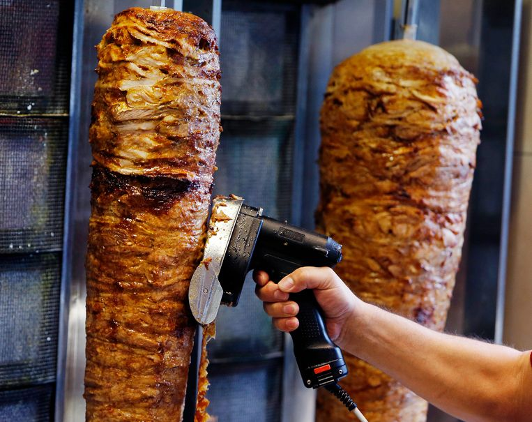

Kebab
De meest voorkomende kebabsoort in Europa is döner kebab. Het is een van oorsprong Turks gerecht, dat geïntroduceerd werd in Europa in de Duitse hoofdstad Berlijn door een Turkse immigrant. Döner kebab bestaat uit laagjes lams-, kalfs- of kippenvlees die op een grote pin geperst worden. De pin draait rond en wordt van de zijkant verwarmd. Door met een mes of snijapparaat af te snijden krijg je kleine plakjes vlees. Döner kebab wordt vaak op een broodje gegeten, aangevuld met sla, tomaat, ui en saus. Soms wordt het vlees ook op een dürüm (een soort platbrood) gedaan, die wordt opgerold. Bij kebab hoort de typisch Turkse drank ayran

Bron